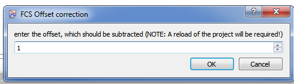
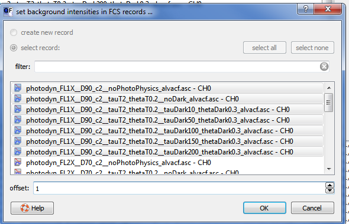

$$qf_commondoc_header.start$$ $$qf_commondoc_header.end$$
There are two standard version of the FCS correlation funcition:
$$bmath:G(\tau)=\frac{\langle I(t)\cdot I(t+\tau)\rangle}{\langle I\rangle^2}$$
and
$$bmath:g(\tau)=\frac{\langle\delta I(t)\cdot\delta I(t+\tau)\rangle}{\langle I\rangle^2}\equiv G(\tau)-1$$
Here $$math:I(t)$$ is the absolute fluorescence intensity and $$math:\delta I(t)=I(t)-\langle I\rangle$$ are the fluorescence fluctuations around the average value $$math:\langle I\rangle$$ only.
As shown in the second expression, they only differ by an offset of 1. For large lag-times, they decay to $$\lim_{\tau\rightarrow\infty}g(\tau)=0$$ and $$\lim_{\tau\rightarrow\infty}G(\tau)=1$$.
Most FCS fit models in QuickFit can cope with this offset, by their parameter $$math:G_\infty$$, which can be set to 1 for $$math:G(\tau)$$ and 0 for $$math:g(\tau)$$.
Still, in some cases one may want to correct for this offset before the data evaluation. There are two simple function, which can do that:
- In order to correct a single FCS RDR, do the following:
- open the RDR editor of the FCS record, by double-clicking it in the main window of QuickFit.
- click on the menu entry Data|correct CFs for offset.
- A new dialog will pop up, where you can set the offset, you want to subtract (e.g. set it to 1 for $$math:G(\tau)$$-data):

- Now you will have to reload the project (in QuickFit's main window, click on the menu entry File|Reload Project and save the project, when asked), for the offset correction to take effect.$$note:This correction is applied, when the data files are loaded. The input data files are NEVER touched.$$
- In order to correct a several FCS RDRs, do the following:
- In QuickFit's main window, click on the menu entry Tools|FCS/DLS tools.
- A new dialog will pop up, where you can set the offset, you want to subtract (e.g. set it to 1 for $$math:G(\tau)$$-data) and select the FCS RDRs, to which you want to apply the correction:

- Now you will have to reload the project (in QuickFit's main window, click on the menu entry File|Reload Project and save the project, when asked), for the offset correction to take effect.$$note:This correction is applied, when the data files are loaded. The input data files are NEVER touched.$$